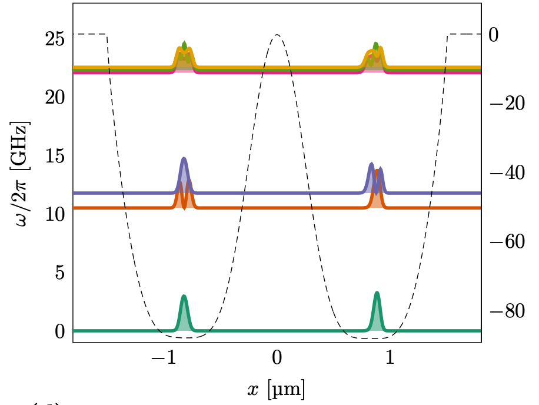

Entanglement is the fundamental characteristic that distinguishes quantum systems composed of two or more coupled objects from their classical counterparts. The study of entanglement in precisely engineered quantum systems with countably many degrees of freedom is at the forefront of modern physics and is a key resource in quantum information science (QIS). This is particularly true in the development of two-qubit logic for quantum computation.
The generation of two-qubit entanglement has been demonstrated in a wide variety of physical systems used in present-day quantum computing, including superconducting circuits, trapped ions, semiconductor quantum dots, color-center defects in diamond, and neutral atoms in optical lattices, just to name a few.
Generating an entanglement between two quantum systems rely on exploiting interactions in a controllable way. The details in the interaction Hamiltonian between two systems defines the protocol schemes for two-qubit logic.
In superconducting circuits the interaction between qubits may arise from direct capacitive coupling between circuit elements or by indirect coupling of two qubits to a common resonator (virtually populating resonator mode) which results in a non-local Hamiltonian in the form of exchange interaction. This allow to implement various schemes for entanglement, such as controlled-phase gate, resonator-induced phase gate, cross-resonance gates etc.
Entanglement gates in trapped ions are produced by means of the Coulomb interaction, where shared motional modes of two or more ions, entangled to their internal states, used for transferring excitations between ion qubits. This has been experimentally demonstrated.
In photonic quantum computing schemes two-qubit entangling operations are realized by nonlinear interactions between two photons scattering from quantum dots, plasmonic nanowires, diamond vacancy centers and others embedded into waveguides. Two-qubit gates in semiconductor quantum dots are based on spin-spin exchange interactions or generated by coupling to a superconducting resonator via artificial spin-orbit interaction.
We start by defining a state vector \( \boldsymbol{x} \) (meant to represent various quantum mechanical degrees of freedom) with \( n \) components as
$$ \boldsymbol{x} = \begin{bmatrix} x_0\\ x_1 \\ x_2 \\ \dots \\ \dots \\ x_{n-1} \end{bmatrix}. $$Throughout these notes we will use the so-called Dirac bra-ket formalism and we will replace the above standard boldfaced notation for a vector with
$$ \boldsymbol{x} = \vert x \rangle = \begin{bmatrix} x_0\\ x_1 \\ x_2 \\ \dots \\ \dots \\ x_{n-1} \end{bmatrix}, $$and
$$ \boldsymbol{x}^{\dagger} = \langle x \vert = \begin{bmatrix} x_0^* & x_1^* & x_2^* & \dots & \dots & x_{n-1}^* \end{bmatrix}, $$With a given vector \( \vert x \rangle \), we define the inner product as
$$ \langle x \vert x\rangle = \sum_{i=0}^{n-1} x_i^*x_i=x_0^2+x_1^2+\dots + x_{n-1}^2. $$For two arbitrary vectors \( \vert x\rangle \) and \( \vert y\rangle \) with the same lentgh, we have the general expression
$$ \langle y \vert x\rangle = \sum_{i=0}^{n-1} y_i^*x_i=y_0^*x_0+y_1^*x_1+\dots + y_{n-1}^*x_{n-1}. $$Note well that the inner product \( \langle x \vert x\rangle \) is always a real number while for a two different vectors \( \langle y \vert x\rangle \) is in general not equal to \( \langle x \vert y\rangle \), as can be seen from the following example
We note in bypassing that \( \vert x\rangle^{\dagger}=\langle x \vert \), \( \langle x\vert^{\dagger}=\vert x\rangle \) and \( (\vert x\rangle^{\dagger})^{\dagger}=\vert x \rangle \).
Let us assume that \( \vert x \rangle \) is given by
$$ \vert x \rangle = \begin{bmatrix} 1-\imath \\ 2+\imath \end{bmatrix}. $$The inner product gives us
$$ \langle x\vert x \rangle = (1+\imath)(1-\imath)+(2-\imath)(2+\imath)=7, $$a real number. We can use the norm/inner product to normalize the vector \( \vert x \rangle \) and obtain
$$ \vert x \rangle = \frac{1}{\sqrt{7}}\begin{bmatrix} 1-\imath \\ 2+\imath \end{bmatrix}. $$As another example, consider the two vectors
$$ \vert x \rangle = \begin{bmatrix} -1 \\ 2\imath \\ 1\end{bmatrix}, $$and
$$ \vert y \rangle = \begin{bmatrix} 1 \\ 0\imath \\ \imath\end{bmatrix}. $$We see that the inner products \( \langle x\vert y \rangle = -1+\imath \), which is not the same as \( \langle y\vert x \rangle = -1-\imath \). This leads to the important rule
$$ \langle x\vert y\rangle^* = \langle y \vert x\rangle. $$In addition to inner products between vectors/states, the outer product plays a central role in all of quantum mechanics. It is defined as
$$ \vert x\rangle \langle y \vert = \begin{bmatrix} x_0y_0^* & x_0y_1^* & x_0y_2^* & \dots & \dots & x_0y_{n-2}^* & x_0y_{n-1}^* \\ x_1y_0^* & x_1y_1^* & x_1y_2^* & \dots & \dots & x_1y_{n-2}^* & x_1y_{n-1}^* \\ x_2y_0^* & x_2y_1^* & x_2y_2^* & \dots & \dots & x_2y_{n-2}^* & x_2y_{n-1}^* \\ \dots & \dots & \dots & \dots & \dots & \dots & \dots \\ \dots & \dots & \dots & \dots & \dots & \dots & \dots \\ x_{n-2}y_0^* & x_{n-2}y_1^* & x_{n-2}y_2^* & \dots & \dots & x_{n-2}y_{n-2}^* & x_{n-2}y_{n-1}^* \\ x_{n-1}y_0^* & x_{n-1}y_1^* & x_{n-1}y_2^* & \dots & \dots & x_{n-1}y_{n-2}^* & x_{n-1}y_{n-1}^* \end{bmatrix} $$In quantum computing, the so-called Pauli matrices, and other simple \( 2\times 2 \) matrices, play an important role, ranging from the setup of quantum gates to a rewrite of creation and annihilation operators and other quantum mechanical operators. Let us start with the familiar Pauli matrices and remind ourselves of some of their basic properties.
The Pauli matrices are defined as
$$ \sigma_x = \begin{bmatrix} 0 & 1 \\ 1 & 0 \end{bmatrix}, $$ $$ \sigma_y = \begin{bmatrix} 0 & -\imath \\ \imath & 0 \end{bmatrix}, $$and
$$ \sigma_z = \begin{bmatrix} 1 & 0 \\ 0 & -1 \end{bmatrix}. $$It is easy to show that the matrices obey the properties (being involutory)
$$ \sigma_x\sigma_x = \sigma_y\sigma_y=\sigma_z\sigma_z = I=\begin{bmatrix} 1 & 0 \\ 0 & 1\end{bmatrix}, $$that is their products with themselves result in the identity matrix \( \boldsymbol{I} \). Furthermore, the Pauli matrices are unitary matrices meaning that their inverses are equal to their hermitian conjugated matrices. The determinants of the Pauli matrices are all equal to \( -1 \), as can be easily verified.
The Pauli matrices obey also the following commutation rules
$$ \left[\sigma_x,\sigma_y\right] = 2\imath \sigma_z. $$Before we proceed with other matrices and how they can be used to operate on various quantum mechanical states, let us try to define various basis sets and their pertinent notations. We will often refer to these basis states as our computational basis.
Assume we have a two-level system where the two states are represented by the state vectors \( \vert \phi_0\rangle \) and \( \vert \phi_1\rangle \), respectively. These states could represent selected or effective degrees of freedom for either a single particle (fermion or boson) or they could represent effective many-body degrees of freedon. In actual realizations of quantum computing we search often for candidate systems where we can use some low-lying states as computational basis states. But we are not limited to quantum computing. When doing many-body physics, due to the exploding degrees of freedom, we normally search after effective ways by which we can reduce the involved dimensionalities to a number of degrees of freedom we can handle by a given many-body method.

We will now relabel the above two states as two orthogonal and normalized basis (ONB) states
$$ \vert \phi_0 \rangle = \vert 0 \rangle = \begin{bmatrix} 1 \\ 0 \end{bmatrix}, $$and
$$ \vert \phi_1 \rangle = \vert 1 \rangle = \begin{bmatrix} 0 \\ 1 \end{bmatrix}. $$It is straight forward to see that \( \langle 1 \vert 0\rangle=0 \). With these two states we can define the define the identity operator \( \boldsymbol{I} \) as the sum of the outer products of these two states, namely
$$ \boldsymbol{I} = \sum_{i=0}^{i=1}\vert i\rangle \langle i\vert = \begin{bmatrix} 1 & 0 \\ 0 & 0 \end{bmatrix} +\begin{bmatrix} 0 & 0 \\ 0 & 1 \end{bmatrix}=\begin{bmatrix} 1 & 0 \\ 0 & 1 \end{bmatrix}. $$We can further define the projection operators
$$ \boldsymbol{P} = \vert 0\rangle \langle 0\vert = \begin{bmatrix} 1 & 0 \\ 0 & 0 \end{bmatrix}, $$and
$$ \boldsymbol{Q} = \vert 1\rangle \langle 1\vert = \begin{bmatrix} 0 & 0 \\ 0 & 1 \end{bmatrix}. $$We note that \( P^2=P \), \( Q^2=Q \) (the operators are idempotent) and that their determinants are zero, meaning in turn that we cannot use these operators for unitary/orthogonal transformations. However, they play important roles in defining effective Hilbert spaces for many-body studies. Finally, before proceeding we note also that the two matrices commute and we have \( \boldsymbol{P}\boldsymbol{Q}=0 \) and \( \left[ \boldsymbol{P},\boldsymbol{Q}\right]=0 \).
Using the properties of ONBs we can expand a new state in terms of the above states. These states could also form a basis which is an eigenbasis of a selected Hamiltonian (more of this below).
We define now a new state which is a linear expansion in terms of these computational basis states
$$ \vert \psi \rangle = \alpha \vert 0 \rangle + \beta\vert 1 \rangle, $$where the coefficients \( \alpha = \langle 0 \vert \psi \rangle \) and \( \beta =\langle 1 \vert \psi\rangle \) reresent the overlaps between the computational basis states and the state \( \vert \psi\rangle \). In quantum speech, we say the state is in a superposition of the states \( \vert 0\rangle \) and \( \vert 1\rangle \).
Computing the inner product of \( \vert \psi \rangle \) we obtain
$$ \langle \psi \vert \psi \rangle = \vert \alpha \vert ^2\langle 0\vert 0\rangle + \vert \beta \vert ^2\langle 1\vert 1\rangle = \vert \alpha \vert ^2 + \vert \beta \vert ^2 = 1, $$since the new basis, which is defined in terms of a a unitary/orthogonal transformation, preserves the orthogonality and norm of the original computational basis \( \vert 0\rangle \) and \( \vert 1\rangle \). To see this, consider the unitary transformation (show derivation of preserving orthogonality).
If we now act with the projection operators \( \boldsymbol{P} \) and \( \boldsymbol{Q} \) on the state \( \vert \psi\rangle \) we get
$$ \boldsymbol{P}\vert \psi \rangle = \vert 0 \rangle\langle 0\vert (\alpha \vert 0 \rangle + \beta\vert 1 \rangle)=\alpha \vert 0\rangle, $$that is we project out the \( \vert 0\rangle \) component of the state \( \vert \psi\rangle \) with the coefficient \( \alpha \) while \( \boldsymbol{Q} \) projects out the \( \vert 1\rangle \) component with coefficient \( \beta \) as seen from
$$ \boldsymbol{Q}\vert \psi \rangle = \vert 1 \rangle\langle 1\vert (\alpha \vert 0 \rangle + \beta\vert 1 \rangle)=\beta \vert 1\rangle. $$The above results can easily be derived by multiplying the pertinent matrices with the vectors \( \vert 0\rangle \) and \( \vert 1\rangle \), respectively.
Using the above linear expansion we can now define the density matrix of the state \( \vert \psi\rangle \) as the outer product
$$ \boldsymbol{\rho}=\vert \psi \rangle\langle \psi \vert = \alpha\alpha^* \vert 0 \rangle\langle 0\vert+\alpha\beta^* \vert 0 \rangle\langle 1\vert+\beta\alpha^* \vert 1 \rangle\langle 0\vert+\beta\beta^* \vert 1 \rangle\langle 1\vert=\begin{bmatrix} \alpha\alpha^* & \alpha\beta^*\\ \beta\alpha^* & \beta\beta^*\end{bmatrix}. $$Finally, we note that the trace of the density matrix is simply given by unity
$$ \mathrm{tr}\boldsymbol{\rho}=\alpha\alpha^* +\beta\beta^*=1. $$Other operators (as matrices) which play an important role in quantum computing, the so-called Hadamard matrix (or gate)
$$ \boldsymbol{H}=\frac{1}{\sqrt{2}}\begin{bmatrix} 1 & 1 \\ 1 & -1\end{bmatrix}. $$The action of the operator \( \boldsymbol{H} \) on a computational basis state like \( \vert 0\rangle \) gives
$$ \boldsymbol{H}\vert 0 \rangle = \frac{1}{\sqrt{2}}\begin{bmatrix} 1 & 1 \\ 1 & -1\end{bmatrix}\begin{bmatrix} 1 \\ 0\end{bmatrix}=\frac{1}{\sqrt{2}}(\vert 0\rangle + \vert 1\rangle), $$and
$$ \boldsymbol{H}\vert 1 \rangle = \frac{1}{\sqrt{2}}\begin{bmatrix} 1 & 1 \\ 1 & -1\end{bmatrix}\begin{bmatrix} 0 \\ 1\end{bmatrix}=\frac{1}{\sqrt{2}}(\vert 0\rangle - \vert 1\rangle), $$that is we create a superposition of the states \( \vert 0\rangle \) and \( \vert 1\rangle \).
Another famous operation is the phase matrix given by
$$ \boldsymbol{S} = \begin{bmatrix} 1 & 0 \\ 0 & \imath\end{bmatrix}. $$Consider now two vectors with length \( n=2 \), with elements
$$ \vert x \rangle = \begin{bmatrix} x_0 \\ x_1 \end{bmatrix}, $$and
$$ \vert y \rangle = \begin{bmatrix} y_0 \\ y_1 \end{bmatrix}. $$The tensor product of these two vectors is defined as
$$ \vert x \rangle \otimes \vert y \rangle = \vert xy \rangle = \begin{bmatrix} x_0y_0 \\ x_0y_1 \\ x_1y_0 \\ x_1y_1 \end{bmatrix}, $$which is now a vector of length \( 4 \).
If we now go back to our original one-qubit basis states, we can form teh following tensor products
$$ \vert 0 \rangle \otimes \vert 0 \rangle = \begin{bmatrix} 1 \\ 0\end{bmatrix} \otimes \begin{bmatrix} 1 \\ 0\end{bmatrix} =\begin{bmatrix} 1 \\ 0 \\ 0 \\ 0 \end{bmatrix}=\vert 00 \rangle, $$ $$ \vert 0 \rangle \otimes \vert 1 \rangle = \begin{bmatrix} 1 \\ 0\end{bmatrix} \otimes \begin{bmatrix} 0 \\ 1\end{bmatrix} =\begin{bmatrix} 0 \\ 1 \\ 0 \\ 0 \end{bmatrix}=\vert 01 \rangle, $$ $$ \vert 1 \rangle \otimes \vert 0 \rangle = \begin{bmatrix} 0 \\ 1\end{bmatrix} \otimes \begin{bmatrix} 1 \\ 0\end{bmatrix} =\begin{bmatrix} 0 \\ 0 \\ 1 \\ 0 \end{bmatrix}=\vert 10 \rangle, $$and finally
$$ \vert 1 \rangle \otimes \vert 1 \rangle = \begin{bmatrix} 0 \\ 1\end{bmatrix} \otimes \begin{bmatrix} 0 \\ 1\end{bmatrix} =\begin{bmatrix} 0 \\ 0 \\ 0 \\ 1 \end{bmatrix}=\vert 11 \rangle. $$We have now four different states and we could try to make a new list by relabeling the states as follows \( \vert 00 \rangle =\vert 0 \rangle \), \( \vert 01 \rangle =\vert 1 \rangle \), \( \vert 10 \rangle =\vert 2 \rangle \), \( \vert 11 \rangle =\vert 3 \rangle \).
In similar ways we can define the tensor product of three qubits (or single-particle states) as
$$ \vert 0 \rangle \otimes \vert 0 \rangle \otimes \vert 0 \rangle = \begin{bmatrix} 1 \\ 0\end{bmatrix} \otimes \begin{bmatrix} 1 \\ 0\end{bmatrix} \otimes \begin{bmatrix} 1 \\ 0\end{bmatrix}=\begin{bmatrix} 1 \\ 0 \\ 0 \\ 0 \\ 0 \\0 \\ 0 \\ 0\end{bmatrix}=\vert 000 \rangle, $$which is a new vector of length eight. We note that with a single-particle basis given the states \( \vert 0\rangle \) and \( \vert 1\rangle \) we can, with \( N \) particles construct \( 2^N \) different states. This is something we can generalize to
The tensor product of two \( 2\times 2 \) matrices \( \boldsymbol{A} \) and \( \boldsymbol{B} \) is given by
$$ \boldsymbol{A} \otimes \boldsymbol{B} = \begin{bmatrix} a_{00} & a_{01} \\ a_{10} & a_{11} \end{bmatrix} \otimes \begin{bmatrix} b_{00} & b_{01} \\ b_{10} & b_{11} \end{bmatrix} = \begin{bmatrix} a_{00} b_{00} & a_{00}b_{01} & a_{01} b_{00} & a_{01}b_{01} \\ a_{00} b_{10} & a_{00}b_{11} & a_{01} b_{10} & a_{01}b_{11} \\ a_{10} b_{00} & a_{10}b_{01} & a_{11} b_{00} & a_{11}b_{01} \\ a_{10} b_{10} & a_{10}b_{11} & a_{11} b_{10} & a_{11}b_{11} \end{bmatrix} $$Using the above linear expansion we can now define the density matrix of the state \( \vert \psi\rangle \) as the outer product
$$ \boldsymbol{\rho}=\vert \psi \rangle\langle \psi \vert = \alpha\alpha^* \vert 0 \rangle\langle 0\vert+\alpha\beta^* \vert 0 \rangle\langle 1\vert+\beta\alpha^* \vert 1 \rangle\langle 0\vert+\beta\beta^* \vert 1 \rangle\langle 1\vert=\begin{bmatrix} \alpha\alpha^* & \alpha\beta^*\\ \beta\alpha^* & \beta\beta^*\end{bmatrix}. $$Finally, we note that the trace of the density matrix is simply given by unity if the states are properly normalized
$$ \mathrm{tr}\boldsymbol{\rho}=\alpha\alpha^* +\beta\beta^*=1. $$The probability of a measurement on a quantum system giving a certain result is determined by the weight of the relevant basis state in the state vector. After the measurement, the system is in a state that corresponds to the result of the measurement. The operators and gates discussed below are examples of operations we can perform on specific states.
We consider the state
$$ \vert \psi\rangle = \alpha \vert 0 \rangle +\beta \vert 1 \rangle $$After the measurement, the state of the system is the state associated with the result of the measurement.
We have already encountered the projection operators \( P \) and \( Q \). Let us now look at other types of operations we can make on qubit states.
We defined The Pauli matrices as
$$ \sigma_x = \begin{bmatrix} 0 & 1 \\ 1 & 0 \end{bmatrix}, $$ $$ \sigma_y = \begin{bmatrix} 0 & -\imath \\ \imath & 0 \end{bmatrix}, $$and
$$ \sigma_z = \begin{bmatrix} 1 & 0 \\ 0 & -1 \end{bmatrix}. $$Before we proceed with other matrices and how they can be used to operate on various quantum mechanical states, let us try apply these matrices to our one-qubit states.
Assume we operate with \( \sigma_x \) on our basis state \( \vert 0 \rangle \). This gives
$$ \begin{bmatrix} 0 & 1 \\ 1 & 0 \end{bmatrix}\begin{bmatrix} 1 \\ 0 \end{bmatrix}=\begin{bmatrix} 0 \\ 1 \end{bmatrix}, $$that is we switch from \( \vert 0\rangle \) to \( \vert 1\rangle \) (often called a spin flip operation) and similary we have
$$ \begin{bmatrix} 0 & 1 \\ 1 & 0 \end{bmatrix}\begin{bmatrix} 0 \\ 1 \end{bmatrix}=\begin{bmatrix} 1 \\ 0 \end{bmatrix}. $$This matrix plays an important role in quantum computing since we can link this with the classical NOT operation. If we send in bit 0, the NOT gate outputs bit 1 and vice versa. We can use the \( \sigma_x \) matrix to implement the quantum mechanical equivalent of a classical NOT gate. If we input what we could represent as bit 0 in terms of the basis state \( \vert 0\rangle \), operating on this state results in the state \( \vert 1\rangle \), which we in turn can interpret as the classical bit 1.
If we have a linear superposition of these states we obtain
$$ \begin{bmatrix}0 & 1 \\ 1 & 0 \end{bmatrix}\begin{bmatrix}\alpha \\ \beta \end{bmatrix}=\begin{bmatrix}\beta \\ \alpha \end{bmatrix}. $$The \( \sigma_y \) matrix introduces an imaginary sign, which we will later encounter in terms of so-called phase-shift operations.
The \( \sigma_z \) matrix has the following effect
$$ \begin{bmatrix} 1 & 0 \\ 0 & -1 \end{bmatrix}\begin{bmatrix} 1 \\ 0 \end{bmatrix}=\begin{bmatrix} 1 \\ 0 \end{bmatrix}, $$and
$$ \begin{bmatrix} 1 & 0 \\ 0 & -1 \end{bmatrix}\begin{bmatrix} 0 \\ 1 \end{bmatrix}=\begin{bmatrix} 0 \\ -1 \end{bmatrix}, $$which we can link with a specific phase-shift.
What do the last equations means concerning the two one-qubit states?
Another famous operation is the phase matrix given by
$$ \boldsymbol{S} = \begin{bmatrix} 1 & 0 \\ 0 & \imath\end{bmatrix}. $$The matrices we introduced here are so-called unitary matrices. This is an important element in quantum mechanics since the evolution of a closed quantum system is described by operations involving unitary operations only.
We have defined a new state \( \vert \psi_p\rangle \) as a linear expansion in terms of an orthogonal and normalized basis (our computational basis) \( \phi_{\lambda} \)
$$ \begin{equation} \vert \psi_i\rangle = \sum_{j} u_{ij}\vert \phi_{j}\rangle. \label{_auto1} \end{equation} $$It is normal to choose a basis defined as the eigenfunctions of parts of the full Hamiltonian. The typical situation consists of the solutions of the one-body part of the Hamiltonian, that is we have
$$ \hat{h}_0\vert \phi_{i}\rangle=\epsilon_{i}\vert \phi_{i}\rangle. $$This is normally referred to as a single-particle basis \( \vert\phi_{i}(\mathbf{r})\rangle \), defined by the quantum numbers \( i \) and \( \mathbf{r} \).
A unitary transformation is important since it keeps the orthogonality. To see this consider first a basis of vectors \( \mathbf{v}_i \),
$$ \mathbf{v}_i = \begin{bmatrix} v_{i1} \\ \dots \\ \dots \\v_{in} \end{bmatrix} $$We assume that the basis is orthogonal, that is
$$ \mathbf{v}_j^T\mathbf{v}_i = \delta_{ij}. $$An orthogonal or unitary transformation
$$ \mathbf{w}_i=\mathbf{U}\mathbf{v}_i, $$preserves the dot product and orthogonality since
$$ \mathbf{w}_j^T\mathbf{w}_i=(\mathbf{U}\mathbf{v}_j)^T\mathbf{U}\mathbf{v}_i=\mathbf{v}_j^T\mathbf{U}^T\mathbf{U}\mathbf{v}_i= \mathbf{v}_j^T\mathbf{v}_i = \delta_{ij}. $$This means that if the coefficients \( u_{p\lambda} \) belong to a unitary or orthogonal transformation (using the Dirac bra-ket notation)
$$ \vert \psi_i\rangle = \sum_{j} u_{ij}\vert \phi_{j}\rangle. $$orthogonality is preserved.
Note also that although a basis \( \left\{\vert \phi_i \rangle\right\} \) contains an infinity of states, for practical calculations we have always to make some truncations.
Assume we have two one-qubit states represented by
$$ \vert \psi \rangle = \alpha \vert 0 \rangle + \beta \vert 1\rangle=\begin{bmatrix}\alpha \\ \beta \end{bmatrix}, $$and
$$ \vert \phi \rangle = \gamma \vert 0 \rangle + \delta \vert 1\rangle=\begin{bmatrix}\gamma \\ \delta \end{bmatrix}. $$We assume that the state \( \vert \phi \rangle \) is obtained through a unitary transformation of \( \vert \psi \rangle \) through a matrix \( \boldsymbol{U} \) with its hermitian conjugate \( \boldsymbol{U}^{\dagger} \) with matrix elements \( u_{ij}^{\dagger}=u_{ji}^* \) and \( \boldsymbol{I}=\boldsymbol{U}\boldsymbol{U}^{\dagger}=\boldsymbol{U}^{\dagger}\boldsymbol{U} \).
Note that this means that the hermitian conjugate of a unitary matrix is equal to its inverse. This has important consequences for what is called reversibility. We say quantum mechanics is a theory which is reversible with a probabilistic determinism. Classical mechanics on the other is reversible in a deterministic way, that is, knowing all initial conditions we can in principle determine the future motion of an object which obey the laws of motion of classical mechanics.
We have then
$$ \begin{bmatrix}\gamma \\ \delta \end{bmatrix}=\begin{bmatrix}u_{00} & u_{01} \\ u_{10} & u_{11} \end{bmatrix}\begin{bmatrix}\alpha \\ \beta \end{bmatrix}. $$Since our original basis \( \vert \psi\rangle \) is orthogonal and normalized with \( \vert\alpha\vert^2+\vert\beta\vert^2=1 \), the new basis is also orthogonal and normalized, as we can see below here.
Since the inverse of a hermitian matrix is equal to its hermitian conjugate/adjoint), unitary transformations are always reversible.
Why are only unitary transformations allowed? The key lies in the way the inner product tranforms.
To see this we rewrite the new basis from the previous example in its two components as
$$ \vert \phi\rangle_i=\sum_{j}u_{ij}\vert \psi\rangle_j, $$or in terms of a matrix-vector notatio we have
$$ \vert \phi\rangle=\boldsymbol{U}\vert \psi\rangle, $$We have already assumed that \( \langle \psi \vert \psi \rangle = \vert\alpha\vert^2+\vert\beta\vert^2=1 \).
We have that
$$ \langle \phi\vert_i=\sum_{j}u_{ij}^*\langle \psi\vert_j, $$or in terms of a matrix-vector notation we have
$$ \langle \phi\vert=\langle \psi\vert\boldsymbol{U}^{\dagger}. $$Note that the two vectors are row vectors now.
If we stay with this notation we have
$$ \langle \phi\vert\phi\rangle = \langle \psi \boldsymbol{U}^{\dagger}\boldsymbol{U}\vert \psi\rangle = \langle \psi\vert \psi\rangle=1! $$Unitary transformations are rotations in state space which preserve the length (the square root of the inner product) of the state vector.
Before we proceed we need several other definitions. Throughout these lectures we will assume that the interacting part of the Hamiltonian can be approximated by a two-body interaction. This means that our Hamiltonian can be written as the sum of a onebody part, which includes kinetic energy and an eventual external field, and a twobody interaction
$$ \begin{equation} \hat{H} = \hat{H}_0 + \hat{H}_I = \sum_{i=1}^N \hat{h}_0(x_i) + \sum_{i < j}^N \hat{v}(r_{ij}), \label{_auto2} \end{equation} $$with
$$ \begin{equation} H_0=\sum_{i=1}^N \hat{h}_0(x_i). \label{hinuclei} \end{equation} $$The onebody part \( u_{\mathrm{ext}}(x_i) \) is normally approximated by a harmonic oscillator potential or the Coulomb interaction an electron feels from the nucleus. However, other potentials are fully possible, such as one derived from the self-consistent solution of the Hartree-Fock equations.
In order to study get started with coding, we will study two simple Hamiltonian systems, one which we can use for a single qubit systems and one which has as basis functions a two-qubit system. These two simple Hamiltonians exhibit also something which is called level crossing, a feature which we will use in later studies of entanglement.
We study first a simple two-level system. Thereafter we extend our model to a four-level system which can be interpreted as composed of two separate (not necesseraly identical) subsystems.
We let our hamiltonian depend linearly on a strength parameter \( z \)
$$ H=H_0+\lambda H_\mathrm{I}, $$with \( \lambda \in [0,1] \), where the limits \( \lambda=0 \) and \( \lambda=1 \) represent the non-interacting (or unperturbed) and fully interacting system, respectively. The model is an eigenvalue problem with only two available states, which we label \( \vert 0\rangle \) and \( \vert 1\rangle \), respectively. Below we will let state \( \vert 0 \rangle \) represent the lowest state (often referred to as model-space state) with its pertinent eigenvalue and eigenvector whereas state \( \vert 1\rangle \) represents the eigenvalue of the excluded space. The non-interacting solutions to our problem are
$$ \begin{equation} H_0\vert 0 \rangle =\epsilon_0\vert 0 \rangle, \label{_auto3} \end{equation} $$and
$$ \begin{equation} H_0\vert 1\rangle =\epsilon_1\vert 1\rangle, \label{_auto4} \end{equation} $$with \( \epsilon_0 < \epsilon_1 \). We label the off-diagonal matrix elements \( X \), while \( X_0=\langle 0 \vert H_I\vert 0 \rangle \) and \( X_1=\langle 1 \vert H_1\vert 1 \rangle \). The exact eigenvalue problem
$$ \label{eq:twolevelH} \begin{equation} \left(\begin{array}{cc}\epsilon_0+\lambda X_0 &\lambda X \\ \lambda X &\epsilon_1+\lambda X_1 \end{array}\right) \end{equation} $$yields
$$ \begin{eqnarray} \label{eq:exact} E(\lambda)=&\frac{1}{2}\left\{\epsilon_0 +\epsilon_1 +\lambda X_0 +\lambda X_1 \pm \left( \epsilon_1 -\epsilon_0 +\lambda X_1-\lambda X_0\right) \right. \\ \nonumber & \left. \times\sqrt{1+\frac{4\lambda^2X^2}{\left( \epsilon_1 -\epsilon_0 +\lambda X_1-\lambda X_0\right)^2}} \right\}. \end{eqnarray} $$In the results below we set the parameters \( \epsilon_0=0 \), \( \epsilon_1=4 \), \( X_0=-X_1=3 \) and \( X=0.2 \). This eigenvalue problem can easily be rewritten in terms of the standard Pauli matrices. The non-interacting solutions represent our computational basis. Pertinent to our choice of parameters, is that at \( \lambda\geq 2/3 \), the lowest eigenstate is dominated by \( \vert 1\rangle \) while the upper is \( \vert 0 \rangle \). At \( \lambda=1 \) the \( \vert 0 \rangle \) mixing of the lowest eigenvalue is \( 1\% \) while for \( \lambda\leq 2/3 \) we have a \( \vert 0 \rangle \) component of more than \( 90\% \). The character of the eigenvectors has therefore been interchanged when passing \( z=2/3 \). The value of the parameter \( X \) represents the strength of the coupling between the model space and the excluded space. The following code computes and plots the eigenvalues.
%matplotlib inline
from matplotlib import pyplot as plt
import numpy as np
dim = 2
#Setting up a tridiagonal matrix and finding eigenvectors and eigenvalues
Hamiltonian = np.zeros((dim,dim))
#number of lambda values
n = 100
lmbd = np.linspace(0.,1.0,n)
e0 = 0.0
e1 = 4.0
X = 0.20
Xp = 3.0
Eigenvalue = np.zeros((dim,n))
for i in range(n):
Hamiltonian[0,0] = lmbd[i]*Xp+e0
Hamiltonian[0,1] = lmbd[i]*X
Hamiltonian[1,0] = Hamiltonian[0,1]
Hamiltonian[1,1] = e1+lmbd[i]*(-Xp)
# diagonalize and obtain eigenvalues, not necessarily sorted
EigValues, EigVectors = np.linalg.eig(Hamiltonian)
# sort eigenvectors and eigenvalues
permute = EigValues.argsort()
EigValues = EigValues[permute]
EigVectors = EigVectors[:,permute]
Eigenvalue[0,i] = EigValues[0]
Eigenvalue[1,i] = EigValues[1]
plt.plot(lmbd, Eigenvalue[0,:] ,'b-',lmbd, Eigenvalue[1,:],'g-',)
plt.xlabel('$\lambda$')
plt.ylabel('Eigenvalues')
plt.show()
What happens?
This model exhibits a simple level crossing where the composition of the final interacting states change character as we gradually switch on the interaction.
We extend the simple two-level system to a four level system. This system can be thought of as composed of two subsystems \( A \) and \( B \). Each subsystem has computational basis states
$$ \vert 0\rangle_{\mathrm{A,B}}=\begin{bmatrix} 1 & 0\end{bmatrix}^T \hspace{1cm} \vert 1\rangle_{\mathrm{A,B}}=\begin{bmatrix} 0 & 1\end{bmatrix}^T. $$The subsystems could represent single particles or composite many-particle systems of a given symmetry. This leads to the many-body computational basis states
$$ \vert 00\rangle = \vert 0\rangle_{\mathrm{A}}\otimes \vert 0\rangle_{\mathrm{B}}=\begin{bmatrix} 1 & 0 & 0 &0\end{bmatrix}^T, $$and
$$ \vert 10\rangle = \vert 1\rangle_{\mathrm{A}}\otimes \vert 0\rangle_{\mathrm{B}}=\begin{bmatrix} 0 & 1 & 0 &0\end{bmatrix}^T, $$and
$$ \vert 01\rangle = \vert 0\rangle_{\mathrm{A}}\otimes \vert 1\rangle_{\mathrm{B}}=\begin{bmatrix} 0 & 0 & 1 &0\end{bmatrix}^T, $$and finally
$$ \vert 11\rangle = \vert 1\rangle_{\mathrm{A}}\otimes \vert 1\rangle_{\mathrm{B}}=\begin{bmatrix} 0 & 0 & 0 &1\end{bmatrix}^T. $$These computational basis states define also the eigenstates of the non-interacting Hamiltonian
$$ H_0\vert 00 \rangle = \epsilon_{00}\vert 00 \rangle, $$ $$ H_0\vert 10 \rangle = \epsilon_{10}\vert 10 \rangle, $$ $$ H_0\vert 01 \rangle = \epsilon_{01}\vert 01 \rangle, $$and
$$ H_0\vert 11 \rangle = \epsilon_{11}\vert 11 \rangle. $$The interacting part of the Hamiltonian \( H_{\mathrm{I}} \) is given by the tensor product of two \( \sigma_x \) and \( \sigma_z \) matrices, respectively, that is
$$ H_{\mathrm{I}}=H_x\sigma_x\otimes\sigma_x+H_z\sigma_z\otimes\sigma_z, $$where \( H_x \) and \( H_z \) are interaction strength parameters. Our final Hamiltonian matrix is given by
$$ \boldsymbol{H}=\begin{bmatrix} \epsilon_{00}+H_z & 0 & 0 & H_x \\ 0 & \epsilon_{10}-H_z & H_x & 0 \\ 0 & H_x & \epsilon_{01}-H_z & 0 \\ H_x & 0 & 0 & \epsilon_{11} +H_z \end{bmatrix}. $$The four eigenstates of the above Hamiltonian matrix can in turn be used to define density matrices. As an example, the density matrix of the first eigenstate (lowest energy \( E_0 \)) \( \Psi_0 \) is
$$ \rho_0=\left(\alpha_{00}\vert 00 \rangle\langle 00\vert+\alpha_{10}\vert 10 \rangle\langle 10\vert+\alpha_{01}\vert 01 \rangle\langle 01\vert+\alpha_{11}\vert 11 \rangle\langle 11\vert\right), $$where the coefficients \( \alpha_{ij} \) are the eigenvector coefficients resulting from the solution of the above eigenvalue problem.
%matplotlib inline
from matplotlib import pyplot as plt
import numpy as np
from scipy.linalg import logm, expm
def log2M(a): # base 2 matrix logarithm
return logm(a)/np.log(2.0)
dim = 4
Hamiltonian = np.zeros((dim,dim))
#number of lambda values
n = 40
lmbd = np.linspace(0.0,1.0,n)
Hx = 2.0
Hz = 3.0
# Non-diagonal part as sigma_x tensor product with sigma_x
sx = np.matrix([[0,1],[1,0]])
sx2 = Hx*np.kron(sx, sx)
# Diagonal part as sigma_z tensor product with sigma_z
sz = np.matrix([[1,0],[0,-1]])
sz2 = Hz*np.kron(sz, sz)
noninteracting = [0.0, 2.5, 6.5, 7.0]
D = np.diag(noninteracting)
Eigenvalue = np.zeros((dim,n))
for i in range(n):
Hamiltonian = lmbd[i]*(sx2+sz2)+D
# diagonalize and obtain eigenvalues, not necessarily sorted
EigValues, EigVectors = np.linalg.eig(Hamiltonian)
# sort eigenvectors and eigenvalues
permute = EigValues.argsort()
EigValues = EigValues[permute]
EigVectors = EigVectors[:,permute]
# Compute density matrix for selected system state, here ground state
DensityMatrix = np.zeros((dim,dim))
DensityMatrix = np.outer(EigVectors[:,0],EigVectors[:,0])
# Plotting eigenvalues
Eigenvalue[0,i] = EigValues[0]
Eigenvalue[1,i] = EigValues[1]
Eigenvalue[2,i] = EigValues[2]
Eigenvalue[3,i] = EigValues[3]
plt.plot(lmbd, Eigenvalue[0,:] ,'b-',lmbd, Eigenvalue[1,:],'g-',)
plt.plot(lmbd, Eigenvalue[2,:] ,'r-',lmbd, Eigenvalue[3,:],'y-',)
plt.xlabel('$\lambda$')
plt.ylabel('Eigenvalues')
plt.show()
We define a symmetric matrix \( H\in {\mathbb{R}}^{2\times 2} \)
$$ H = \begin{bmatrix} H_{11} & H_{12} \\ H_{21} & H_{22} \end{bmatrix}, $$We let \( H = H_0 + H_I \), where
$$ H_0= \begin{bmatrix} E_1 & 0 \\ 0 & E_2\end{bmatrix}, $$is a diagonal matrix. Similarly,
$$ H_I= \begin{bmatrix} V_{11} & V_{12} \\ V_{21} & V_{22}\end{bmatrix}, $$where \( V_{ij} \) represent various interaction matrix elements. We can view \( H_0 \) as the non-interacting solution
$$ \begin{equation} H_0\vert 0 \rangle =E_1\vert 0 \rangle, \label{_auto5} \end{equation} $$and
$$ \begin{equation} H_0\vert 1\rangle =E_2\vert 1\rangle, \label{_auto6} \end{equation} $$where we have defined the orthogonal computational one-qubit basis states \( \vert 0\rangle \) and \( \vert 1\rangle \).
a) Show that you can rewrite the above Hamiltonian in terms of the Pauli \( x \) and \( z \) matrices
Solution. We rewrite \( H \) (and \( H_0 \) and \( H_I \)) via Pauli matrices
$$ H_0 = \mathcal{E} I + \Omega \sigma_z, \quad \mathcal{E} = \frac{E_1 + E_2}{2}, \; \Omega = \frac{E_1-E_2}{2}, $$and
$$ H_I = c \boldsymbol{I} +\omega_z\sigma_z + \omega_x\sigma_x, $$with \( c = (V_{11}+V_{22})/2 \), \( \omega_z = (V_{11}-V_{22})/2 \) and \( \omega_x = V_{12}=V_{21} \).